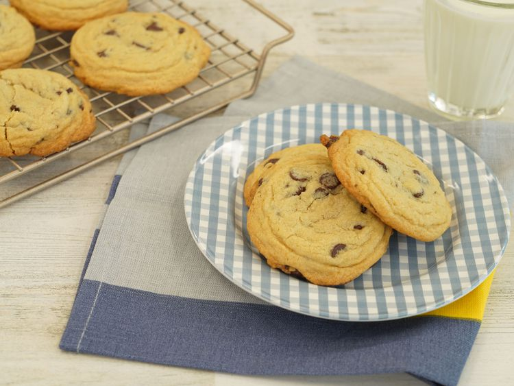

Home
Chocolate Chip Cookies

A classic recipe, just like Grandma used to make.
Ingredients
- 1 cup butter, softened
- 1 cup white sugar
- 1 cup packed brown sugar
- 2 large eggs
- 2 tsp vanilla extract
- 1 tsp baking soda
- 2 tsp hot water
- 1/2 tsp salt
- 3 cups all-purpose flour
- 2 cups semisweet chocolate chips
- 1 cup chopped walnuts
Directions
- Gather your ingredients, making sure your butter is softened,
and your eggs are room temperature.
- Preheat the oven to 350 degrees F (175 degrees C). Beat butter,
white sugar, and brown sugar with an electric mixer in a large
bowl until smooth.
- Beat in eggs, one at a time, then stir in vanilla.
- Dissolve baking soda in hot water. Add to batter along with salt.
- Stir in flour, chocolate chips, and walnuts.
- Drop spoonfuls of dough 2 inches apart onto ungreased baking sheets.
- Bake in the preheated oven until edges are nicely browned, about
10 minutes.
- Cool on the baking sheets briefly before removing to a wire rack
to cool completely.
- Store in an airtight container or serve immediately and enjoy!